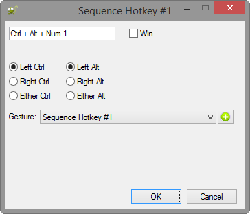

Throughout Windows Master, you can assign hotkeys and gestures to actions. This dialog is provided as a means to set that hotkey and gesture.
To assign a hotkey, focus the white field (containing Ctrl + Alt + Num 1 in the screenshot below). After doing so, perform the desired hotkey combination; if it is a valid combination, then that will be displayed in the control, otherwise "None" will be displayed.
Notice the "Left" "Right" and "Either" options below. In the screenshot below, the hotkey is set to LCtrl + LAlt + Num1. This means that you could assign a different action the hotkey, RCtrl + RAlt + Num1 RCtrl + LAlt + Num1 or finally LCtrl + RAlt + Num1. However, if the combination was set to Ctrl + Alt + Num1 with Either checked, then you could not set any of the aforementioned hotkey combinations to any other actions. In summary, Left and Right allow you to set more hotkeys, but it requires a good memory to keep track of all the permutations.
Select a Leap Motion gesture using the grey droplist labeled Gesture:. A link to the Gestures Control Center is provided through the button.

Note: The Windows key cannot be detected, so a checkbox is provided instead.
Note: When recording a hotkey and using a key from the NumPad, take notice of the state of your NumLock. Also keep this is mind when performing that keystroke combination.
Summary of what is validated: